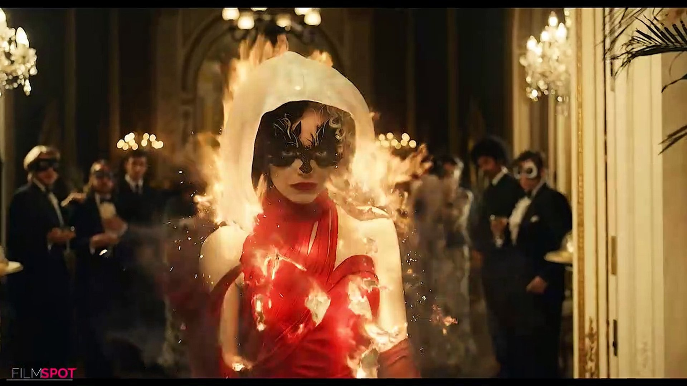
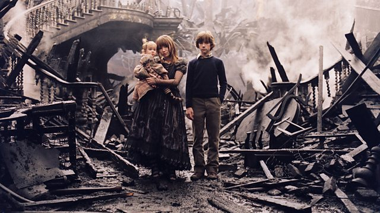

James Cameron's "Titanic" is an epic, action-packed romance set against the ill-fated maiden voyage of the R.M.S. Titanic; the pride and joy of the White Star Line and, at the time, the largest moving object ever built. She was the most luxurious liner of her era -- the "ship of dreams" -- which ultimately carried over 1,500 people to their death in the ice cold waters of the North Atlantic in the early hours of April 15, 1912.
Estella is a young and clever grifter who's determined to make a name for herself in the fashion world. She soon meets a pair of thieves who appreciate her appetite for mischief, and together they build a life for themselves on the streets of London. However, when Estella befriends fashion legend Baroness von Hellman, she embraces her wicked side to become the raucous and revenge-bent Cruella.
The comically dark tale centres around three children, Violet, Klaus and baby Sunny, whose parents are killed in a fire which also destroys their home - a tragic event which sets the tone for the rest of the book. Sent to live with Count Olaf, a distant relative, their unsettled lives take a turn for the worse.